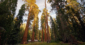
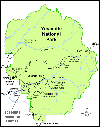

Redwoods
Over the years I have had plenty of opportunities to travel throughout Northern California to discover the wonder of the Redwood forests composed of Giant Sequoias and Coast Redwoods.  There was the trip I took where I drove up the coast from San Francisco all the way to the Oregon border visiting such wonders as Jedediah Smith Redwoods State Park, Humboldt Redwoods State Park, and Del Norte Coast Redwoods State Park. That experience humbled me with the awe and majesty of these massive natural structures. Much has been accomplished over the decades to preserve these groves of trees that have an average age of 2000 years. I had the pleasure last Summer of visiting one of these reserves, The Montgomery Woods State Natural Reserve. One of the groves within the Reserve contains the infamous Mendocino tree, which at one time was considered the third largest tree in the world.
Yosemite National Park
The first spring after I moved to California I spent a week up in Yosemite National Park. The park opened up the door to my first experience communing with nature in the Sierra Nevada mountain range.  I hiked many different trails throughout the Yosemite Valley taking me to various wonders such as Half dome and Yosemite falls. The Tuolumne Meadows represent that large area in the northern part of the park where elevation averages above 8,500 feet. Within the meadows the infamous John Muir Trail and the Pacific Crest Trail are routed through the park. Unfortunately, I was never able to make it to the Mariposa Grove, the largest grove of Giant Sequoias in the park. Two of the trees in that grove are among the 30 largest in the world. The oldest of those, named Grizzly Giant, has been estimated to be between 1900 and 2400 years old.
{kind=link}
Big Basin Redwoods State Park
Big Basin Redwoods State Park represents the first California State park established in 1902. Over the years I have had the pleasure to take several camping trips there. With over 80 miles of trails there were plenty of opportunities for scenic hiking. Some of the special waterfalls of the Waddell Creek watershed to hike to include the Sempivirens Falls and the Berry Creek Falls.

One of the great landmarks of the park goes by the name Mother of the Forest. She stands 280 feet tall, but prior to a storm that snapped off the top 50 feet she was 329 feet tall. The giant redwood held the mark as the tallest tree in the Bay Area and the tallest redwood South of San Francisco. However, another giant was found in the park recently along the Meteor trail measuring 328 feet giving it the title as the tallest.